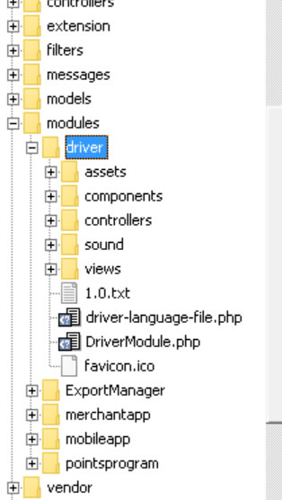
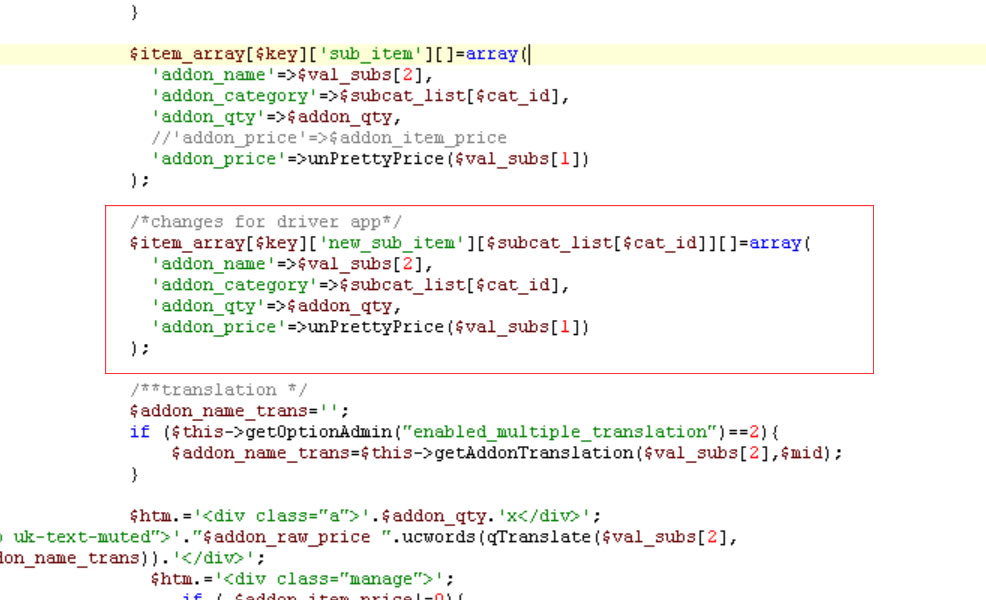
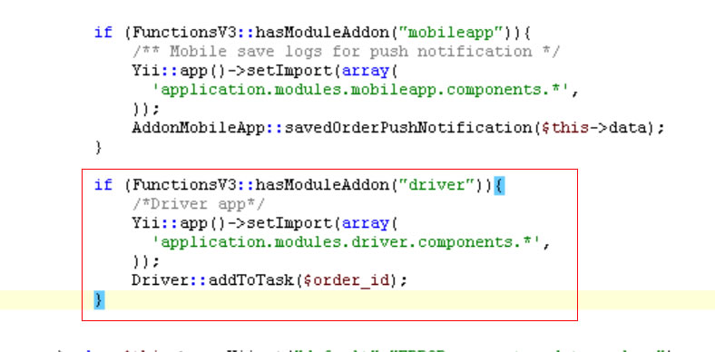
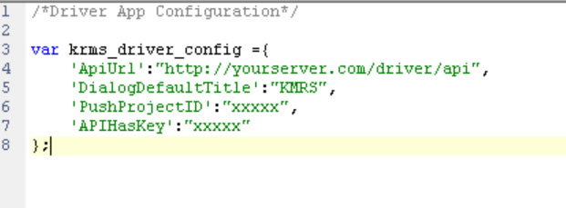
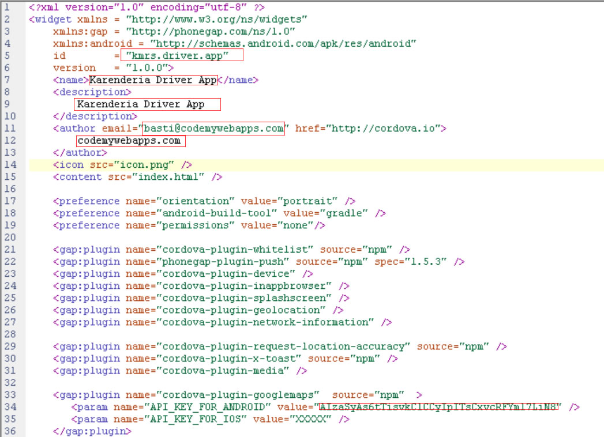
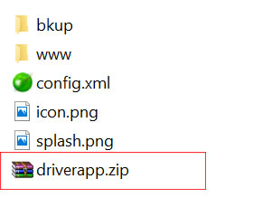
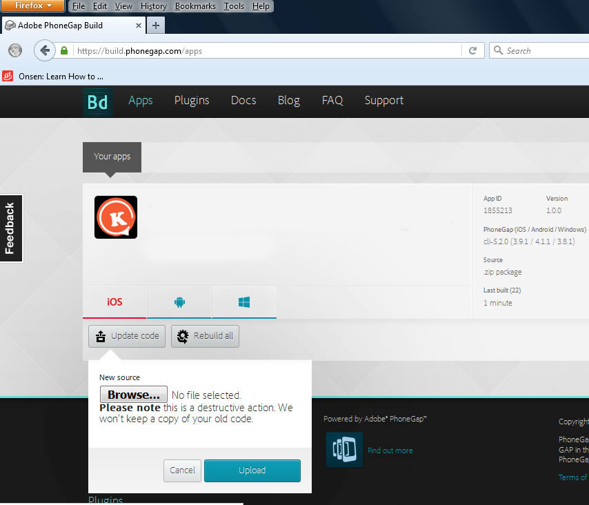
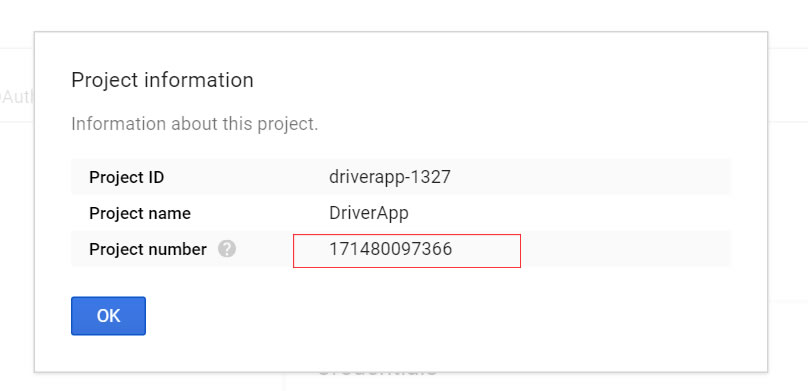

Karenderia Driver Mobile App
- created: 02/06/2016
- by: bastikikang
- email: basti@codemywebapps.com
Karenderia Driver Mobile App is a mobile application for Karenderia Multiple Restaurant System which can be use by restaurant owner to manage their daily pickup/delivery task.
Karenderia driver mobile app connects to KRMS via json api calls just simply install the modules for the api and settings and your all done. its comes with very easy steps by steps procedure on how to install the api & settings modules.
Features
Receiving & Managing Orders Made Easy
- Manage daily driver task
- Easy to assign delivery/pickup task
- alert notification
- Realtime location of your driver
- Group your driver by assigning them to a team
- Send push notification/SMS and email to your driver
- Interactive map directions
- Translation ready
- Customer signature
- Calendar task view
- Driver On duty on/off features
- Realtime driver who's online
Live Demo
See the Karenderia Driver Mobile App in action?
Download android APK File click here
Watch Karenderia Driver Mobile App in action click here
Backend Settings Click here
Credentials
username : admin
password : admin
Video Tutorials
How to install driver app modules
https://youtu.be/AyN4bmxBtvY
How to create google api key
https://youtu.be/XxB9l1r5Q4Q
How to compile driver app
https://youtu.be/pWUThq0JByI
How to translate
https://youtu.be/eKDDD_BqAH0
How to run cron jobs
https://youtu.be/7lrNECQ5bvM
Installation
First you need to install the Driver app modules on your karenderia multiple restaurant system these will include the mobile api engine and driver app settings.
1. create a folder called modules on protected folder
2. copy the folder modules/driver to protected/modules (driver is the file/folder where you download from Codecanyon)
3. open the file /protected/config/main.php and add the following code after the line 'language'=>'default',
'modules'=>array( 'driver'=>array( 'require_login'=>true ) ),
Example complete addon modules configuration
'modules'=>array( 'ExportManager'=>array( 'require_login'=>true ), 'mobileapp'=>array( 'require_login'=>true ), 'pointsprogram'=>array( 'require_login'=>true ), 'merchantapp'=>array( 'require_login'=>true ), 'driver'=>array( 'require_login'=>true ) ),
3.1 add the driver components automatically
by adding the code below on import =>
'application.modules.driver.components.*',
it should be like the screenshot below
Click Here for complete example of main.php
4 add the new code that driver required for order details format.
open the file protected/components/functions.php and look for the functions displayOrderHTML
after the line 3220 add the following code below
Note: if you are using version 3.2 this is already added and you can skip this part
/*changes for driver app*/ $item_array[$key]['new_sub_item'][$subcat_list[$cat_id]][]=array( 'addon_name'=>$val_subs[2], 'addon_category'=>$subcat_list[$cat_id], 'addon_qty'=>$addon_qty, 'addon_price'=>unPrettyPrice($val_subs[1]) );
5 Add the code that will insert the order as task.
this code is very important once the merchant accept the order
it will auto insert the order as task to driver back office.
open the file protected/components/AjaxAdmin.php and look for the functions updateOrder(),
after the line $DbExt->insertData("{{order_history}}",$params_history); or after the condition of mobile app
insert the code below. see screemshot
if (FunctionsV3::hasModuleAddon("driver")){
/*Driver app*/
Yii::app()->setImport(array(
'application.modules.driver.components.*',
));
Driver::addToTask($order_id);
}

Note: if you are using version 3.2 this is already added and you can skip this part
if you are using the version below 3.2 you will need to add the new functions on the
file components/Functionv3.php
add the new functions called hasModuleAddon at the very end of the class Functionsv3
public static function hasModuleAddon($modulename='')
{
if (Yii::app()->hasModule($modulename)){
$path_to_upload=Yii::getPathOfAlias('webroot')."/protected/modules/$modulename";
if(file_exists($path_to_upload)){
return true;
}
}
return false;
}
6 Update all online payment gateway with the auto insert to task
a. Open the file protected/components/AjaxAdmin.php
and look for the functions paypalCheckoutPayment
and after the line $db_ext->insertData("{{paypal_payment}}",$insert);
insert the code below
if (FunctionsV3::hasModuleAddon("driver")){
Yii::app()->setImport(array(
'application.modules.driver.components.*',
));
Driver::addToTask($this->data['order_id']);
}
c. Open the file protected\views\store\atz-merchant-init.php
add the the code as mention on steps a. but change the line $this->data['order_id'] to $data_get['id']
after the line $db_ext->updateData("{{order}}",$params_update,'order_id',$data_get['id']);
d. Open the file \protected\views\store\braintree-init.php
add the the code as mention on steps a. but change the line $this->data['order_id'] to $_GET['id']
after the line $db_ext->updateData("{{order}}",$params_update,'order_id',$_GET['id']);
e. Open the file \protected\views\store\mercado-merchant-init.php
add the the code as mention on steps a. but change the line $this->data['order_id'] to $order_id
after the line $db_ext->updateData("{{order}}",$params_update,'order_id',$order_id);
f. Open the file \protected\views\store\payuinit-merchant.php
add the the code as mention on steps a. but change the line $this->data['order_id'] to $_GET['id']
after the line $db_ext->updateData("{{order}}",$params_update,'order_id',$_GET['id']);
g. Open the file \protected\views\store\stripe-init.php
add the the code as mention on steps a. but change the line $this->data['order_id'] to $_GET['id']
after the line $db_ext->updateData("{{order}}",$params_update,'order_id',$_GET['id']);
7 Update your database
Open your favorite browser and typein the web address
example http://yourserver.com/driver/update
you should see below screenshot
8 Accessing the driver back office
Open your favorite browser and typein the web address
http://yourserver.com/driver
You should see now the driver mobile app back office login page
see blow screenshot
Build your app using phonegap build
To build or compile your driver app you need to have account on http://build.phonegap.com click here to signup then choose the free package
1. Set your driver app settings, open the file www/js/config.js and change the value according to your settings
var krms_driver_config ={
'ApiUrl':"http://yourserver.com/driver/api",
'DialogDefaultTitle':"KMRS",
'PushProjectID':"XXXXX",
"APIHasKey" :"YOUR API HASH KEY (OPTIONAL)"
};
See below screenshot
Where:
ApiUrl = the link of your api [this is mandatory]
you can find your mobile api link on your driver app settings under settings menu.
usually the link will be like this http://yourserver.com/driver/api
DialogDefaultTitle = this is the dialog title that will appear on your driver app eg. MyStore
PushProjectID = this is your google android push notification project id [this is mandatory]
Note: this is all numeric about 11 to 14 digit this is your google Project number
go to sections How to create google android project on how to get your push sender id
APIHasKey = api hash key is optional this features make your api secure so that no one can connect to your api. Make sure your api hash key is the same as on key on your modules settings.
leave empty if you are unsure what is this.
2. Change the app name, app description and author. open the file www/config.xml
- a. change the name to your own app name
- b. change the author email and auhor name
- c. change the app description to your own
- d. change the id (kmrs.driver.app to yours)
- c. change the API_KEY_FOR_ANDROID value (see How to create google android project sections)
You only need to change the red rectangle in the screenshot.
xml does not like any special characters make sure you don't put one
see below screenshot:
3. Zip the required mobile files go to the folder driverapp and select all the files and add to zip.
note: the zip files should contain the following files www folder, icon.png, splash.png and config.xml
you will need to install Winzip to zip the files
or Winrar
by now you should have the file as zip format see below screenshot:
Note: Don't zip the whole folder driverapp you must be inside the folder driverapp when you zip the file.
4. Login to your https://build.phonegap account then go to App menu on top or follow this link https://build.phonegap.com/apps
5. Click on Upload a .zip file or Update Code see below screenshot:


6. Download your driver app APK File
the APK file is the installer file for your android mobile phone
you can transfer this to your mobile phone via bluetooth or wifi connections
see below screenshot
7. Finish :) Congratulation your all done
NOTE:
if you want to publish your app on google play you will need a private key
see Android signing tutorial for phonegap build
http://docs.build.phonegap.com/en_US/signing_signing-android.md.html
How to create google android project
This section is quick guide on how to obtain your PushProjectID and API_KEY_FOR_ANDROID
1. login to your google developer account https://console.developers.google.com/home
2. Create a new project give it a project name.
see below screenshot:
3. Now enabled the API Google Cloud Messaging for android
and Google Maps Android API
see below screenshot:
4. Generate Android Push API Key and API_KEY_FOR_ANDROID go to Credentials -> add credentials -> API Key -> choose Android key
After you have created api key you will be presented with the api key this key you will have to set this on your driver app settings
under general settings

5. How to get your PushProjectID
Click on the 3 dot on top -> project information -> Project number
see below screenshot

6. Finish :)
How to translate the app
To translate the Karenderia Driver Mobile App to your own language please follow the steps.
1. translate the backend and api response.
open the file /driver/driver-language-file.php you will see the list of words
that needed to translate, after you given the correct translation just copy this to your existing language on KMRS.
note: a quick and easiest way is to edit the language file in your server directly. you will find
your current language file on the folder /upload
2.
To translate the driver app, login to your admin panel and go to driver app modules
and click on Language. translate all the words and saved.
note: to add a new language you will need to go to admin -> manage language and add new language file
and go back to mobile modules -> Mobile translation you should see the new language added in a tab.
3. open the file protected/messages/defaul/default.php and add the code below before the this line $language_pack=Yii::app()->functions->getSourceTranslationFile($lang_id);
/** add translation for mobile app */
if (isset($_GET['lang_id'])){
$lang_id=$_GET['lang_id'];
}
it should be like this
/** add translation for mobile app */
if (isset($_GET['lang_id'])){
$lang_id=$_GET['lang_id'];
}
$language_pack=Yii::app()->functions->getSourceTranslationFile($lang_id);
return $language_pack;
How to change notification ringtone
To change the push notification ringtone for android, just follow the simple steps below
- copy your ringtone files (mp3, wav) to the folder www/locales/android/raw (note: this is the mobile app files)
- open the file modules/driver/controllers/CronController.php
and look for the words food_song and replace it with your new ringtone filename don't include the extension such as .mp3
eg. your ring tone filename = test.mp3 then you will put test only'soundname'=>'test'
-
open the file modules/driver/components/Driver.php
and look for the functions RunPush and change the value of $ring_tone_filename to your ringtone filename
same as step 2
Note: to remove the ringtone and just assign the default tone of the device just remove the soundname parameters from CronController.php files
How the order insert as task
1. First you need to set the status on driver back office -> settings -> Order Status
this will be the key when merchant change the status of the order for example
you set the status as accepted when merchant change the order as accepted it will automatically inserted to
driver task.
Note: make sure you already did the step 5 on installation section.
Frequently Asked Questions
What version of KMRS this modules will run?
- Driver App modules will run on version 3.0 and up,
if you are using old version contact me here
How to add the order from krms to driver back office
- first you need to set what status of the order that will be the based of driver back office
by going to driver back office -> Settings -> Order Status
example if you set the status to accepted,
when a merchant has incoming new order
and he/she change the status to accepted it will insert the order as task on back office
and you now can assign the task to any of your driver.
How to change the Driver app logo on login section of the app?
- just replace the following files on www/images/logo.png (take note of the width and height of the image)
How to change the color layout of the app?
- you will need to modify the file www/css/app.css
How to change the app icon and splash screen
On Version 1.1.0 icon and splash screen is already added you just need to replace it with your icon and splash screen make sure its the same size and filename
- replace the following files driverapp/icon.png and driverapp/splash.png
for the icon/splash screen make sure the it has a valid size according to different device
see this link for more information http://docs.build.phonegap.com/en_US/configuring_icons_and_splash.md.html
List of different size of splash screen and icons
https://github.com/phonegap/phonegap/wiki/App-Splash-Screen-Sizes
https://github.com/phonegap/phonegap/wiki/App-Icon-Sizes
Important: make sure you optimize your splash & icon using the tool http://kraken.io/ or any available on the net.
After compile hydration appears
You will need to disabled the phonegap Hydration
After logging in navigate to the apps page, and select your app by clicking its title or icon. On the app's detail page, open the "Settings" panel. Under the "Basic" header de-select the checkbox labeled "enable hydration", and finally hit save.
You've now successfully disabled Hydration.
I Update all the files but it show's blank screen when i access the Karenderia driver app modules
Make sure you copied the correct code on /config/main.php
click here for sample main.php
and make sure the folder assets(this is the assets folder for kmrs not the module)
is writable or the permission is set to 777
DriverApp Version 1.4.0 Update
In version 1.4.0 you need to update your mobile app and merchant app modules
as there is new changes on the task it has now a dropoff or pickup address
1. for mobileapp just open the file mobielapp/controller/apicontroller.php
and look for addToTask
simply change the line AddonMobileApp::addToTask($order_id); to Driver::addToTask($order_id);
just search for the entire code you will find several lines
2. for merchantapp open the file merchantapp/controller/apicontroller.php same as mobile app search for addToTask
simply change the line merchantApp::addToTask($order_id); to Driver::addToTask($order_id);
in functions actionChangeOrderStatus() add the code like below
$_POST['status']=$order_status; Driver::addToTask($order_id);
Take note if your mobileapp and merchantapp version is greater than the date release of driver app disregards this update
Changelog
Notice:
When there is new update make sure you update your module files and mobile app files,
and lastly your database database by visiting your website url
like these http://yourserver.com/driver/update
= 1.6.0 (12 Jan 18) =
- fixed - tips percentage
- fixed - push not refreshing due to push plugin library
- update - config.xml phonegap cli-7.0.1
- update - push notification sounds
- update - add new plugin cordova.plugins.diagnosti for requesting location permission
- update - icon and splash screen to include new icons/splash requires by iOS
UPDATE INSTRUCTION: The following files has been changed in version 1.6.0
Mobile app files
www/js/app.js
driverapp/config.xml
www/beep.wav (new files this is the new push sounds for android and ios)
res/icons (new icons is added for android and ios)
res/screens (new icons is added for android and ios)
Modules
modules/driver/controllers/CronController.php
modules/driver/controllers/UpdateController.php
modules/driver/components/Driver.php
modules/driver/components/DriverIOSPush.php
Language file
modules/driver/translation-file/driverapp.php
Database
in your server visit the link example http://yourserver.com/driver/update to update your database
= 1.5.0 (27 March 16) =
- fixed - add new task merchant list dropdown
- fixed - stuck message in map
- fixed - uploading files in driver app
- fixed - email subject not translating
- fixed - not loading task number in calendar if there is APIHasKey set in config.js
- fixed - missing translation
- fixed - responsive layout
- fixed - add receive by in task history
- fixed - cannot view task description when viewing task in agent app
- changes - change how to translate the app and backend
- changes - move language selection in settings
- new - add search driver in dashboard
- new - Agents Tracking Options
- new - add last driver login in customer dashboard
- new - add app version in driver information
- new - options to localize calendar
- new - add map when adding new contacts
- new - add sms logs in customer panel
- new - add sms limit
- new - add notes, signature and photo for notifications
- new - add last seen agent
- new - add agent on-duty status
- new - add auto retry auto assign
- new - critical task options
- new - add options to records agents location
- new - map options Hide Pickup Task
- new - map options Hide Delivery Task
- new - map options Hide Successful Task
- new - add timezone settings in customer panel
- new - add options for settings default app language
- new - add push broadcast
- new - add resize picture when taking picture
- new - update plugin phonegap-plugin-push to use latest version
- new - add default language to driver app
- new - add to change the app name
= 1.4.0 (10 December 16) =
- fixed - update status of order when changing status on backend panel
- fixed - can add same username and email address for driver
- fixed - order details no food item showing
- fixed - auto assign task to get the nearest merchant address rather than customer address
- fixed - special request not showing in order details
- fixed - reports filter not working
- fixed - auto assigment settings when admin update the settings all merchant settings updated as well
- new - add team menu
- new - add recipient name in add signature
- new - assign task to all drivers
- new - allow merchant to use admin drivers
- new - allow to set certain merchant to use admin drivers
- new - allow to set the merchant task to admin as the owner
- new - options to show the task only for admin
- new - add options to disabled the merchant to delete the task
- new - add options to allow merchant to delete the task for a certain time
- new - block merchant list
- new - add options for the driver to add notes
- new - notes enabled/disbaled
- new - signature enabled/disabled
- new - 3 direction map from driver location to merchant location and customer address
- new - auto assign to use the admin driver for merchant
- new - task add pickup details/dropoff details
- new - add auto assign to all drivers
- new - add new template for new added drivers
- new - add upload driver profile photo in backend
- new - driver app profile photo
- new - add driver signup
- new - add order total price in task list driver app
- new - driverapp add total order
- new - add software version in driverapp settings
- new - add total order amount in reports
- new - add device long vibration
- new - add settings to turn on/off notes,signature and signup
- new - upload profile picture in driver app
- new - add options to attach photo on the task
= 1.3.0 (16 August 16) =
- fixed missing translation
- fixed drag map to dragend
- fixed toast plugin library
- fixed cannot compile app on iOS due to outdate version of cordova-plugin-googlemaps
- new add merchant name of task list
- new add merchant address on task details
- new add view merchant address by map
- new add new plugin cordova-plugin-insomnia to prevent the mobile device from sleep
= 1.2.0 (10 July 16) =
- fixed not showing pin if latitude is less than zero
- fixed remove all marker before adding new marker on dahsboard map
- fixed logout functions
- fixed off duty functions
- fixed include tips on app order details
- fixed cancel task if merchant cancel the task via merchant panel
- fixed send push to driver when the task has been cancel
- fixed remove task from driver app if auto assign was unable to assign task
- fixed reports by driver view
- new add new fields for cancel order in driver settings
= 1.1.0 (03 July 16) =
- fixed getting of latitude and longtitude when saving on settings
- fixed toast plugin error on android 5.1
- fixed intel inputs wrong path
- fixed saving of default country to use full country name rather than 2 iso code
- fixed intel input default country code parameter if country code is not supported
- fixed website title
- fixed to show all online drivers on dashboard map
- fixed update the order status once the driver change the status of the order
- fixed auto add to task when customer pays online using paypal stripe etc.
- fixed set offline when driver logout on app
- fixed will work without mobile app
- new - iOS is now supported
- new - iOS Push notification
- new - iOS icon and splash screen ready
- new - Android icon and splash screen ready
- new - show all details of order
- new - automatic task assigning
- new - task reports
- new - auto fill the address when dragging marker
- new - locate driver on map
- new - add options to include the offline driver to show map
- new - add options to send push notification to online drivers only
- new - add auto refresh map
- new - add get map direction
- new - send indivual and bulk push notification to driver
= 1.0.0 (02 June 16) =
- Initial release version
Sources and Credits
Thanks so much to
- Onsen UI Version 2
- Jquery
- Yii Framework
- Boostrap 3
- Chosen
- Simple Ajax Uploader
- Form validator
- Mobiscroll
- phonegap-plugin-push
- jSignature
- Full calendar
- imagesLoaded
- cordova-plugin-request-location-accuracy
- Toast-PhoneGap-Plugin
- cordova-plugin-media
- cordova-plugin-googlemaps
- jquery.datetimepicker
- Bootstrap Switch
- js-cookie
- moment.js
- jplayer
Finally
I spent a lot of time on this thing. Nevertheless it's still not finished. I like to improve it wherever I can and appreciate your feedback. I'd be glad to help you if you have any questions relating to this application. No guarantees, but I'll do my best to assist.